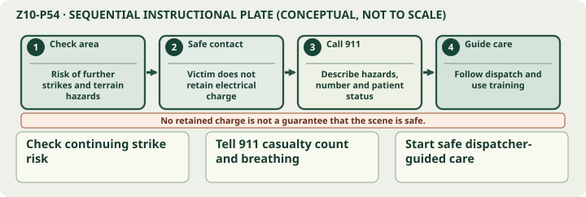

Z10-P54 · Wilderness medicine · New manuscript
Recognize ongoing lightning hazards and coordinate emergency care
Provide safe immediate resuscitation after a lightning strike without exposing rescuers to ongoing storm danger.
When it applies · Outdoor group struck by direct lightning or ground current during a thunderstorm.
Equipment · Phone/radio for 911, AED if near a building, and ground insulation once scene is clear.

Actions
- Check ongoing lightning, terrain and electrical hazards before approaching. A lightning victim does not retain an electrical charge, but the site may still be dangerous.[M28, T01]
- With multiple casualties, tell 911 which people are unresponsive and not breathing normally. Begin resuscitation when safe and follow dispatch on priorities.[M28, M03]
- Activate 911 immediately, start trained/dispatcher-guided CPR and AED use on anyone not breathing normally, and arrange clinical evaluation for ALL struck persons (checking burns, hearing/eye injury, and spinal precautions).[M03, M07, M11]
Failure recognition · Avoiding touching a struck teammate out of fear of leftover electricity, or tending a conscious bruised hiker first while a non-breathing victim goes without CPR.[M03, T01]
Verify · Confirm scene safety, immediate 911/CPR for non-breathing victims first, and medical referral for every affected party member.[M03, T02]
Stop or change course · If ongoing lightning makes care unsafe, tell dispatch and follow its direction on movement and resuscitation.[M28, T01]
Evidence and editorial notes
- M03 · American Heart Association · 2025 Adult Basic Life Support (2025)
- Section: Figure 2 Adult Basic Life Support Algorithm for Lay Rescuers; 6.1 Recognition of Cardiac Arrest · Conditions: Unresponsive adult with absent or abnormal breathing; early dispatch and AED access
Support: Recognize gasps as abnormal, activate EMS, start CPR and use an AED promptly. Follow prompts and resume after analysis or shock.
Limitations: Pediatric and drowning arrest require their own training or dispatch prompts; the adult cardiac-arrest algorithm is not all-age guidance. · Conflicting evidence: See A02 claim audit for boundaries.
Editorial note: Distinguishes lay activation and dispatcher-guided CPR from advanced life support. · Specialist reviewer: EMS and resuscitation specialist
Primary source · checked 2026-11-25 - M07 · NIH / MedlinePlus · Burns (current web edition)
- Section: Thermal Burn Cooling, Covering, and Severity Escalation · Conditions: Minor vs major thermal burns (flame, scald, contact)
Support: Cool minor superficial burns with cool (not icy) running water, remove constricting rings/clothing not stuck to skin, cover loosely with clean non-stick dressing, and seek emergency care for deep, large, facial, hand, foot, genital, joint, or airway burns.
Limitations: Never apply ice, butter, grease, or ointments to fresh burns, and do not pop intact blisters. · Conflicting evidence: None; aligns with ARC/ABA lay burn first aid.
Editorial note: Establishes burn-cooling limits and automatic clinical-escalation zones. · Specialist reviewer: Burn care and wilderness medicine
Primary source · checked 2026-11-24 - M11 · CDC · Symptoms of Mild TBI and Concussion (2025)
- Section: Danger signs in adults; Danger signs in children · Conditions: Head impact or suspected mild brain injury; age matters
Support: Seek emergency care for danger signs such as worsening headache, repeated vomiting, altered behavior or difficulty waking.
Limitations: Spinal precautions, older-adult blood thinners, and return to activity require separate clinical or dispatcher guidance. · Conflicting evidence: See A02 claim audit for boundaries.
Editorial note: Grounds head-trauma, concussion, and spinal-motion-restriction cards. · Specialist reviewer: Neurotrauma and wilderness EMS
Primary source · checked 2026-11-25 - M28 · CDC · Safety Guidelines: Lightning (2026)
- Section: First Aid Recommendations; call for help and assess the situation · Conditions: Lightning casualty with possible continuing storm exposure
Support: Victims retain no charge. Check ongoing danger, report number and status of casualties, call EMS and begin safe dispatcher-guided care.
Limitations: No lay permission to enter an active high-risk scene. Multi-casualty triage needs local protocols. · Conflicting evidence: See A02 claim audit for boundaries.
Editorial note: Added in A02 to separate a consequential source boundary. · Specialist reviewer: Wilderness medicine, EMS and meteorology
Primary source · checked 2026-11-25 - T01 · American Red Cross · First Aid Steps (current web edition)
- Section: First Aid Steps > Check the scene; check the person · Conditions: Lay responder in United States; assess safety before contact
Support: Check scene safety, responsiveness, breathing and immediately life-threatening conditions.
Limitations: Lay guidance does not replace advanced clinical or rescue protocols. · Conflicting evidence: None; universal first-response opening gate.
Editorial note: Anchors scene-safety-first rule across Z01. · Specialist reviewer: EMS and wilderness medicine
Primary source · checked 2026-11-24 - T02 · American Red Cross · First Aid Steps (current web edition)
- Section: First Aid Steps > Call 9-1-1 · Conditions: Lay emergency response to unresponsiveness, abnormal breathing or severe bleeding
Support: Activate EMS and get needed equipment. Follow dispatcher directions and act within training.
Limitations: Remote locations may delay EMS arrival, requiring sustained stabilization after activation. · Conflicting evidence: None; aligns with NPS-E.
Editorial note: Mandates early emergency activation and dispatcher adherence. · Specialist reviewer: EMS and wilderness medicine
Primary source · checked 2026-11-24
Source lineage · NWS Lightning Tips and American Red Cross; new manuscript · Classification · New manuscript.